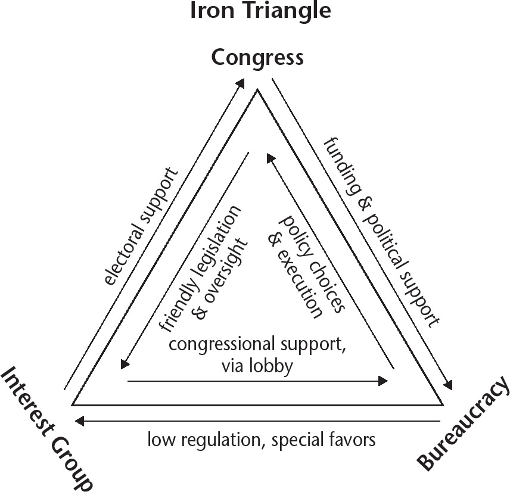

Chapter 7
The Federal Bureaucracy
I.
THE FEDERAL BUREAUCRACY
A.WHAT IS BUREAUCRACY?
1.The term bureaucracy is understood to refer to any administrative organization with the following characteristics:
a.a large number of employees (bureaucrats)
b.a hierarchical structure
c.complex rules and procedures
d.staffed by specialists
2.The U.S. federal bureaucracy employs 2.8 million civilians, most of whom work in the executive branch. Small segments of the bureaucracy exist under the legislative and judicial branches.
3.Advantages of bureaucracy:
a.Centralized authority makes management effective.
b.Specialized roles allow for the development of expertise.
c.Standardized procedures make outcomes efficient and predictable.
d.Standardization promotes equal treatment of individuals.
4.Disadvantages of bureaucracy:
a.In a large bureaucracy, there can be overlapping areas of authority, creating both conflicts and repetition.
b.Formalized procedures with especially extensive paperwork, often called red tape, can delay results.
c.Large, complex organizations may experience inertia, a slowness to respond to change.
d.Placing limits on individual discretion can result in unsatisfactory outcomes and stifle creativity.
B.THE STRUCTURE OF THE FEDERAL BUREAUCRACY
1.All federal government bureaucratic agencies are created and funded by Congress, but most work under the authority of the president. Article II of the Constitution states that the president “shall take Care that the Laws be faithfully executed.” The president appoints the heads of the bureaucratic agencies, but full-time civil service employees do most of the work of government and are subject to laws and oversight from Congress.
2.Executive Office of the President (EOP): This is the group of highly influential policy-related offices and agencies in the executive branch that currently includes the White House Office, the Office of the Vice President, the Office of Management and Budget (OMB), the National Security Council, the Council of Economic Advisers, and the Office of Science and Technology Policy.
a.EOP positions are influential in helping the president achieve his or her policy goals.
b.They are filled through presidential appointment and do not require Senate approval.
c.The president can fire leaders in the executive office of the president at any time without congressional approval.
d.The EOP is headed by the president’s Chief of Staff, the highest-ranking aide to the president whose duties include overseeing White House staff, controlling access to the Oval Office, advising the president, and negotiating with other government officers in the interest of the president’s policy agenda.
3.White House Office: This includes bureaucratic agencies within the EOP comprised of the president’s most trusted and influential advisors who are appointed without Senate approval.
4.Executive Departments: The 15 executive departments, which comprise the bulk of the executive bureaucracy, are led by secretaries, except for the Justice Department, led by the Attorney General. These leaders are collectively referred to as the president’s cabinet.
a.They are chosen by presidential appointment and confirmed by the Senate (majority vote).
b.The president can fire a department secretary at any time without congressional approval.
c.Cabinet departments are not specifically mentioned in the Constitution, but the cabinet has been in place since George Washington. The cabinet has expanded from three departments to 15 over time.
Be sure you understand the difference between bureaucrats in the Executive Office of the President (EOP) and Cabinet Secretaries. The president has greater latitude in selecting his or her closest advisors. White House staff, upon whom the president relies most heavily for guidance, are generally selected with greater emphasis on personal affinity and trust.
Executive Office of the President vs. Cabinet Secretaries
| Executive Office of the President | Cabinet Secretaries |
| The EOP currently includes about 4,000 positions in the White House Office, Council of Economic Advisors, National Security Council, Office of Management and Budget, Office of National Drug Control Policy, Office of Science and Technology Policy, and the Office of the Vice President. | The heads of the 15 executive agencies that make up the president’s cabinet hold the title of Secretary; the exception is the head of the Justice Department, who is the Attorney General. |
| likely to be strong supporters of the president alone | advise the president and manage executive departments resulting in potentially divided support |
| appointed by the president without senate confirmation | appointed by the president and require a majority vote by the Senate |
| often served on the president’s election campaign | often have specialized knowledge and prior political experience |
| lower levels of congressional oversight | greater levels of congressional oversight |
5.Independent Agencies: These are agencies created by Congress that are similar to Cabinet departments, but are smaller and focused on more specific policy areas.
a.Agency heads are appointed by the president with confirmation by the Senate (majority vote).
b.The president can remove agency heads at any time without congressional approval.
c.Examples include the Social Security Administration and the National Foundation on the Arts and Humanities.
6.Regulatory Commissions: These are largely autonomous agencies that develop and enforce regulations related to public policy.
a.Regulatory agencies are typically run by 5- to 10-member boards appointed by the president and confirmed by the Senate (by majority vote).
b.Members of independent regulatory commission boards may not be from the same political party.
c.The president does not have the authority to remove agency heads during their terms.
d.Examples of regulatory commissions are the Environmental Protection Agency (EPA), which regulates and enforces safety protections for clean air and water, and the Federal Election Commission (FEC), which regulates elections and campaigns.
7.Government Corporations: These are government agencies that work similarly to private businesses and offer a specific service.
a.These organizations are frequently necessary to serve markets that would not be profitable for the private sector.
b.Unlike private businesses, government corporations keep their profits instead of distributing them to stockholders.
c.The president does not nominate the individuals who run government corporations.
d.Examples include the United States Postal Service and the Federal Deposit Insurance Corporation (FDIC).
IMPORTANT DEPARTMENTS AND AGENCIES OF THE FEDERAL BUREAUCRACY
Executive Departments (15)
State (1789)
Treasury (1789)
Defense (1789)
Interior (1849)
Agriculture (1862)
Justice (1870)
Commerce (1903)
Labor (1913)
Department of Veterans Affairs (1930)
Department of Education (1953)*
Department of Health and Human Services (1953)*
Housing and Urban Development (1965)
Transportation (1966)
Energy (1977)
Homeland Security (2002)
Select Independent Agencies
Social Security Administration
National Aeronautics and Space Administration
Office of Personnel Management
National Foundation on the Arts and the Humanities
Peace Corps
Select Regulatory Commissions
Federal Election Commission (FEC)
Federal Communications Commission (FCC)
Federal Trade Commission (FTC)
Environmental Protection Agency (EPA)
Securities and Exchange Commission (SEC)
Equal Employment Opportunity Commission (EEOC)
Select Government Corporations
Tennessee Valley Authority (TVA)
Federal Deposit Insurance Corporation (FDIC)
United States Postal Service
National Railroad Passenger Corporation (AMTRAK)
Corporation for Public Broadcasting
Federal National Mortgage Association (Fannie Mae)
*The Department of Health, Education and Welfare was created in 1953. In 1979, this department was split into the Department of Education and the Department of Health and Human Services.
Cabinet secretaries have two goals: advising the president and running their respective departments. Cabinet secretaries often have divided loyalties when the policy initiatives of the president conflict with the goals of their agency.
II.
THE WORK OF THE BUREAUCRACY
A.HOW THE BUREAUCRACY FUNCTIONS
1.The implementation of most federal legislation is the job of the bureaucracy. Bear in mind that it would be impossible for Congress to legislate all of the rules that all of the players in a complex society need to follow. The nitty gritty of regulation is delegated by Congress to the hundreds of offices, bureaus, agencies, and departments that make up the bureaucracy.
2.Congress creates new units of bureaucracy by legislation and charges each with carrying out policy in a specific area. Tasks performed include distribution of funding, developing rules to carry out the agency’s mandates, and enforcing compliance. Congress created the newest cabinet-level executive department, the Department of Homeland Security, in response to the terrorist attacks of September 11, 2001.
3.Bureaucratic (administrative) discretion is the power granted to bureaucratic leadership to implement mandates within policy guidelines, which are frequently not specific and allow agencies considerable latitude. Agencies involved in national security are granted the broadest discretion.
4.Bureaucratic rulemaking is the process whereby government agencies formulate and implement regulations to carry congressional mandates into effect. Regulations are rules that have the force of law. The rulemaking process generally takes place according to the following steps.
a.Enabling legislation is passed by Congress describing an agency’s authority and responsibilities in a particular area.
b.Interest groups, businesses, experts, and other stakeholders may be contacted and given the opportunity to testify to the agency regarding the potential impact of proposed rules.
c.Proposed rules are published in the Federal Register, and the public is given the opportunity to comment or object before rules are enacted.
d.A final rule is adopted.
e.After a 30-day waiting period, during which time Congress may take up the issue in question, the rule becomes effective.
f.The rule could become the subject of court challenges.
B.IRON TRIANGLES AND ISSUE NETWORKS
1.Iron Triangle: The “iron triangle” is named for the strength and long-term stability of the relationships between its three participants: interest groups, bureaucratic agencies, and congressional committees. The triangle develops mutually beneficial public policy.
a.Interest groups act on both Congress (the legislature) and the bureaucracy (the executive branch).
➤An interest group may promote its policy goals by supporting members of the congressional committee overseeing its interest area with campaign contributions and other forms of political support.
➤An interest group also wants to maintain a positive relationship with the bureaucratic agency that regulates its activities. It can achieve this by using its lobbying efforts and congressional connections to influence policy made by committees to align with the desires of the agency.
b.Bureaucratic agencies in the executive branch desire funding and support from Congress to enhance their power and promote their programs. They obtain this in two ways:
➤First, they can support the goals of the congressional committee with which their work is associated.
➤Second, they may influence committees through the lobbying efforts of the interest groups related to the areas they regulate. It is in the interest of agencies to maintain positive relationships with these outside groups, who often influence congressional committees on their behalf. They do so by limiting regulation and generously interpreting legislative mandates.
c.Congressional committees desire cooperation from the agencies that implement their policies.
➤They encourage this support by providing funding and advocacy to these agencies.
➤To maintain the backing of powerful interest groups, congressional committees offer them friendly legislation and oversight in return for political support and contributions.
d.Problems with iron triangles include:
➤Bureaucratic organizations may prioritize the desires of powerful interest groups over their “consumers,” the often marginalized and/or politically weak communities they serve.
➤The revolving door refers to the movement of individuals between points on the iron triangle. For example, someone who has served in Congress or as a bureaucrat in a regulatory agency may be offered a lucrative job in the industry they are entrusted with regulating. They may then use their expertise and contacts on behalf of the industry. Those charged with protecting the public, therefore, may be motivated to act on behalf of special interests at the public’s expense.

2.Issue Network: A connected group of individuals that may include lobbyists, experts from universities and think tanks, the media, members of Congress, and bureaucrats who regularly discuss and advocate public policies.
a.Issue networks often form around narrower issues than iron triangles. For example, an iron triangle may exist between the House and Senate committees dealing with agriculture, the U.S. Department of Agriculture, and interest groups such as farmers and chemical producers. An issue network would be more likely to relate to a specific issue, such as the use of a particular class of pesticides in food production.
b.Issue networks may also be seen as broader than iron triangles in that they encompass not only congressional committees, interest groups, and agencies, but all interested and active players around an issue, including activists, scholars, consultants, lawyers, lobbyists, and anyone else with expertise and concern who participates in the regulatory process.
c.Issue networks tend to be of shorter duration, lasting only as long as necessary to resolve the issue in question.
Both iron triangles and issue networks exemplify the concept of pluralism. The process of regulation results in policies that reflect the participation of numerous groups. Those with the greatest political power and financial resources, however, tend to have the greatest influence on policy outcomes.
C.ENFORCEMENT
1.Federal agencies administer or enforce federal policies. That is, they collect fees, conduct testing, issue licenses, monitor compliance, issue fines, and perform related administrative tasks.
2.In some cases, federal agencies enforce the law through litigation against individuals or corporations who violate regulations. Agencies themselves may file lawsuits, but in other situations lawsuits are filed on behalf of an executive agency by the Justice Department.
3.Implementation of policy is complex, frequently involving cooperation among multiple state and federal agencies with overlapping areas of jurisdiction.
D.OTHER FUNCTIONS OF THE BUREAUCRACY
1.Agencies within the bureaucracy are frequently tasked with the distribution of funds in accordance with legislation passed by Congress. Examples include distributing social security funds and veterans’ benefits.
2.The bureaucracy is a source of subject matter expertise for the government. Professionals employed in the bureaucracy frequently draw on both their subject matter expertise and their experience working within their agencies in testifying before congressional committees.
E.CIVIL SERVICE
1.The bureaucracy employs millions of civilians in a diverse range of positions, including computer programmers, diplomats, clerks, investigators of all kinds, and thousands of other jobs.
2.Before 1883, government jobs at all levels were filled largely from the ranks of those who supported the president and his party. The term patronage refers to the practice of filling jobs with one’s political supporters. This was also known as the spoils system.
3.Following the assassination of President James Garfield by a disgruntled job seeker who felt he was owed a patronage job, Congress passed the Pendleton Act (1883), creating the civil service. The law created guidelines for merit-based employment and promotion for all but the highest levels of federal employment.
4.The result has been the professionalization of the federal bureaucracy. Regular federal employees may not be hired or fired for political reasons. They are hired and promoted based on standardized qualifications and procedures.
5.The civil service is overseen by the Office of Personnel Management.
6.The president appoints less than 1 percent of all federal workers, many of whom are high-level managers who develop and implement policy and work directly for the president.
7.There are benefits to a merit-based civil service system:
a.Professionalism: Employees are selected based on their professional qualifications and background, so that bureaucrats are skilled and knowledgeable experts. They also hold their jobs long-term, developing both in-depth knowledge of their jobs and fields and professional networks.
b.Specialization: A civil service system allows for greater expertise as professional employees pursue qualifications in more specialized roles.
c.Neutrality: Because they are not hired based on partisan loyalty, civil service professionals are more likely to perform their duties with less partisan favoritism.
d.Continuity: Under the spoils system, employees were regularly replaced after each new administration took over, creating inconsistencies in policy administration. A professional bureaucracy creates continuity and uniformity since professional bureaucrats are career employees who remain in their positions even as presidential administrations change.
e.Efficiency: The components of professionalism, specialization, neutrality, and continuity create greater efficiency and productivity within the federal bureaucracy.
8.Federal employees are restricted in their ability to engage in certain political activities while on the job, including participation in political campaigns.
III.
POWERS OF THE THREE BRANCHES OVER THE BUREAUCRACY
A.EXECUTIVE (PRESIDENTIAL) AUTHORITY OVER THE BUREAUCRACY
1.Appointment: The president exercises control over the bureaucracy by appointing the heads of executive departments, independent agencies, and regulatory commissions (with majority Senate approval).
2.Removal: The president may remove the heads of the executive departments and the heads of independent agencies, but not the heads of the regulatory commissions.
3.Executive Orders: When the president issues an executive order, implementation becomes the responsibility of the relevant department or agency.
4.Signing Statements: These are comments, written by the president upon signing a bill, that express his or her interpretation of the legislation and provide guidance on implementation to the appropriate agency or agencies.
B.CONGRESSIONAL AUTHORITY OVER THE BUREAUCRACY
1.Oversight: Congress is responsible for overseeing the rulemaking and discretionary functions of the agencies of the federal bureaucracy. Congress routinely looks into the activity of executive branch agencies but is also likely to launch an investigation in response to constituent complaints as part of casework.
a.Committee Hearings: Congressional committees review reports from related agencies and may call individual bureaucrats in to answer questions directly. Hearings can involve testimony and questioning of both bureaucrats and other witnesses.
b.Power of the Purse: As a result of the expressed power to spend money, Congress has control over the various agencies because it determines the levels of funding in agency budgets.
c.The Government Accountability Office (GAO), often called the “congressional watchdog,” is an independent, nonpartisan agency that works for Congress to monitor the performance of executive agencies and programs. The GAO conducts audits, writes reports, and provides reliable, objective information to Congress to ensure the effective functioning of the bureaucracy.
d.Senate approval (by majority vote) is required for department heads and certain other executive branch officers.
2.Legislation: Congress has passed several key pieces of legislation that have limited the authority of the federal bureaucracy.
a.Congress may, through legislation, create, abolish, or make changes to any bureaucratic agency. Congress may also use very precise language when writing laws in order to eliminate or reduce bureaucratic discretion.
b.The Freedom of Information Act (1996), also known as FOIA, requires that all federal executive branch agencies release information to journalists, researchers, and the public upon request unless the material is confidential (e.g., classified military or intelligence documents).
c.The Whistleblower Protection Acts of 1989 and 2012 and other laws protect government employees from retaliation for exposing corruption or inappropriate practices.
C.JUDICIAL AUTHORITY OVER THE BUREAUCRACY
1.Judicial Review: Bureaucratic actions may be challenged in the federal courts, which interpret federal law and the Constitution. An action may be invalidated if a court finds that federal law has been incorrectly implemented or if the action is found to be unconstitutional.